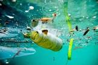

¿CÓMO SE GENERA LA CONTAMINACIÓN EN EL AGUA?
La contaminación del agua se genera cuando sustancias dañinas se introducen en ríos, lagos,mares o aguas subterráneas, afectando su calidad
y volviéndolas peligrosas para los seres vivos.
1.Vertidos industriales y quimicos: Fábricas descargan residuos tóxicos como metales pesados,aceites y productos químicos sin tratar en cuerpos de agua.
2.Aguas residuales y desechos urbanos: Las aguas negras y grises de hogares, hospitales y negocios contienen
detergentes, materia orgánica y microorganismos patógenos.

Página principal
C
U
I
D
A
E
L
A
G
U
A